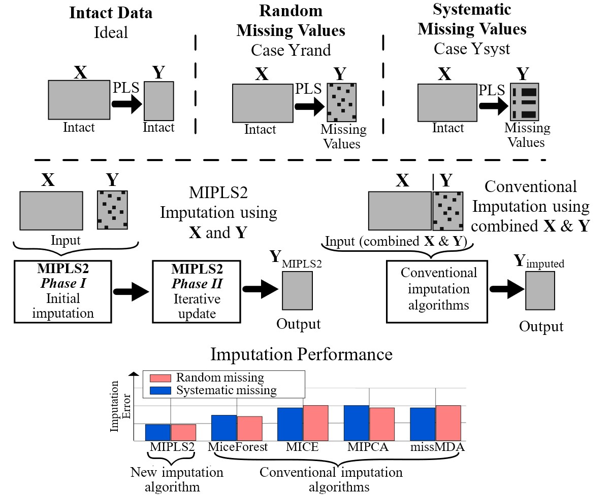

About Me
I am a Postdoctoral Researcher at DTU Compute's Cognitive Systems Section, working on the Novo Nordisk Foundation–funded "Reading the Reader" project under the supervision of Associate Professor Per Bækgaard. My work sits at the intersection of psychophysics, eye-tracking methodology, and computational cognitive modeling — seeking to understand the perceptual and cognitive mechanisms that underlie how humans read.
I received my B.Sc. in Electrical Engineering from Shiraz University (2006), M.Sc. from Shiraz University of Technology (2010), and Ph.D. in Telecommunication Engineering from the same institution (2015). Before joining DTU, I held postdoctoral positions at the University of Southern Denmark (applied AI & data science) and the University of Copenhagen (collaboration between food science, computer science, and FOSS Analytical A/S).
I have authored publications spanning signal and image processing, biomedical computing, and AI/ML applications — including three books in Persian. I have been an IEEE Senior Member since 2022 and an ACM Professional Member since 2025.
Current Research
"Reading the Reader" (RtR)
How does typeface design influence the cognitive effort and efficiency of reading? The RtR project combines psychophysics experiments with advanced eye-tracking analysis to quantify how low-level typographic features — font family, style, and spacing — affect perceptual thresholds, visual short-term memory capacity, and processing speed.
Eye-Tracking & Pupillometry
Using Tobii eye-trackers to capture gaze patterns, fixation dynamics, and Task-Evoked Pupillary Responses (TEPR). Full preprocessing pipeline including blink detection, Hampel filtering, Gaussian smoothing, and baseline correction.
TVA Parameter Estimation
Applying Bundesen's Theory of Visual Attention (TVA) to model visual cognition during reading. Per-participant estimation of K, C, and t₀ across font conditions using Bayesian MCMC in PyMC.
Font Legibility & Psychophysics
Investigating how font families (Cambria, Roboto, Garamond) and styles (regular vs. italic) modulate reading performance through word superiority effects and Bayesian posterior difference distributions.
Bayesian Hierarchical Models
Growth Curve Analysis (GCA) using orthogonal polynomials for temporal pupil data, hierarchical models for Peak Pupil Dilation curves. LOO-CV diagnostics and model identifiability.
Methods & Tools
Statistical Modeling
Programming
Eye-Tracking
Data & Visualization
M-SPARC Workshop
Multimodal Signal Processing for Attentional Resource Cognition
I co-organize the M-SPARC workshop at IEEE ICASSP 2026 in Barcelona, bringing together researchers on multimodal signal processing — eye-tracking, EEG, physiological sensing — for cognitive state estimation, adaptive interfaces, and human-centered AI systems.
Workshop Website ↗Academic Positions
Technical University of Denmark (DTU)
Postdoctoral Researcher — Cognitive Systems, DTU Compute
Reading the Reader project · Eye-tracking & psychophysics · Bayesian cognitive modeling
University of Copenhagen (KU)
Postdoctoral Researcher — Food Science × Computer Science
FOSS Analytical A/S collaboration · MIPLS2 algorithm
University of Southern Denmark (SDU)
Postdoctoral Researcher — Applied AI & Data Science, MMMI
Prostate cancer modeling · EHR · Deep learning for biomedical imaging
Karlsruhe Institute of Technology (KIT)
Internship — Institute for Data Processing and Electronics (IPE)
Education
Ph.D. in Electrical Engineering
Shiraz University of Technology — GPA: 18.18/20 (1st rank)
M.Sc. in Electrical Engineering
Shiraz University of Technology — GPA: 18.28/20 (1st rank)
B.Sc. in Electrical Engineering
Shiraz University
Featured Publications

MIPLS2: Exploiting PLS2 to Impute Missing Values in a Two-Block System with Multiple Response Variables
Analytica Chimica Acta


Epidemiological Description and Trajectories of Patients with Prostate Cancer in Denmark
BMC Research Notes


Opportunities for Students
I actively co-supervise M.Sc. and Ph.D. students and welcome inquiries from motivated candidates interested in human-centered AI, cognitive computing, and reading research.
Adaptive Reading Interfaces Using Eye-Tracking
Design and evaluate real-time adaptive systems that modify typographic parameters based on gaze-derived cognitive load signals.
Bayesian Models for Pupillometric Cognitive Assessment
Develop hierarchical models to quantify cognitive effort from task-evoked pupillary responses during reading.
Biometric Identification Through Reading Patterns
Explore person-specific eye movement signatures during reading for authentication using deep learning on gaze sequences.
Multimodal Cognitive State Estimation
Combine eye-tracking with physiological signals (EEG, GSR) to classify cognitive states such as focused reading and mind-wandering.
Teaching & Supervision
UX Course Co-Teaching
Co-teaching UX Design Prototyping (02810) and User Experience Engineering (02266) at DTU.
Thesis Co-Supervision
Supervised 11+ M.Sc. theses on typography, adaptive reading, eye-tracking biometrics, and reading accessibility.
Peer Review
Reviewer for ETRA, IEEE TMI, IEEE Access, Elsevier ASOC, Springer MTAP, and other venues.